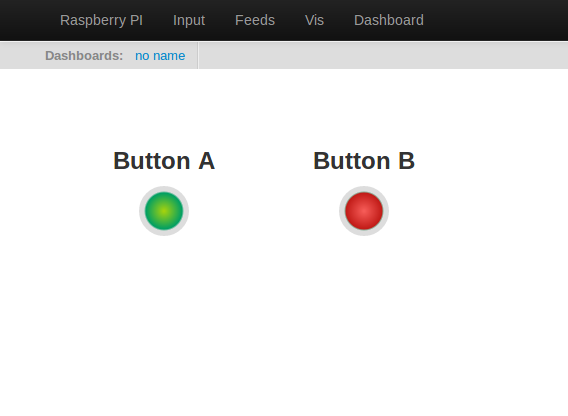

just came across fhem.de (its in english) that allows to control valves etc.... it could be a VERY usefull adition to the CMS system.... but beeing no programmer who has interest to add it?
»
Archived Forum |
|
do we have a good programmer?Submitted by boelle on Tue, 09/04/2013 - 13:51just came across fhem.de (its in english) that allows to control valves etc.... it could be a VERY usefull adition to the CMS system.... but beeing no programmer who has interest to add it? » |
Re: do we have a good programmer?
fhem.de looks nice with the floor plan and method of setting the temperature in a particular room, nice! Yes adding some control widgets to the emoncms dashboard has been on the agenda for a while and not something that should be too hard to add so after your comment, this morning I though id create a basic button as a starting point: here it is:

Its been committed to the master branch of emoncms https://github.com/emoncms/emoncms
Would anyone else be interested in taking this button as a template for creating other control widgets? Here's the code for the button:
https://github.com/emoncms/emoncms/blob/master/Modules/dashboard/Views/js/widgets/button/button_render.js
Id be happy to help look over give pointers for code if anyone wants to take up the challenge.
Re: do we have a good programmer?
Hi!
Sounds very interesting... Will take a look but I have little programming knowledge.
Regards
Re: do we have a good programmer?
This FHEM-Thing sound very interesting and it would be great to do both: measure and control! And perhaps there are more Interface-controllers jet ready and only to include for example on the site: http://shop.busware.de/
I'm interested in also include and log weather-sensors like wind, rain, sun, temp. And I think the FHEM-Project could be interested in our logging- and dashboard- knowledge.
Stefan
Re: do we have a good programmer?
what i did not understand from the site is if the ras pi extension board could be used... but i think since the same radio module can also be used to command valves from conrad... i think its just a matter of having the protocol etc... i know the valves from conrad have a 4 digit code and you just send a serial command together with that... excatly how i have not figured yet
what research could i help with?
Re: do we have a good programmer?
From My early morning experiments with the button which was accidentally found, I can control a feed with the button (setting a 1 or 0) so my thought process is as below with the raspberry pi.
I can read the feed from the mysql easily with PHP and if used from cron can be used to post to CGI, python etc.
If using python can interface with the GPIOs of the Pi and as such can be programed to turn on an LED, transistor circuit for relays etc.
Also I would imagine that the GPIOs can be toggled quick enough to be used with the broad range of Home easy / byebye standby etc home automation (remote control switches). I already do this with an arduino, so this should not be too much more hassle, once I learn python.
Alternatively, it may be possible to set up a CRON to check the status of this feed and possible send over the uart to the RFM12PI and use the GPIOs of that to toggle, flip etc.
Final thought would be to us the RFM12PI to send a message out on the radio side of things to another node, so in my case I could have the following example:
So from any PC, Phone, Smart TV etc, I can turn on the lights to the room I am in, Alter the heating for the room I / we are currently in and so on.
Also The Pi could know what time and day it is, and at 6AM turn on the immersion heater for 15 mins to give enough hot water for the shower, but if the temperature is already adequate, dont turn it on etc.
Tie this in with a database of the sun rise and sunset, and weather predictions, combined with light levels, you can have truely automatic security lights, comfort lights etc. They may only come on when the Alarm is armed etc.
Sorry for the ramble, but I think I have a weekend project figuring out how to implement this and how to send 2 way communication to ad from the Pi and nodes.
Jimmy
Re: do we have a good programmer?
sorry for beeing away so much, have been playing getting my wter meter and heat mter added to the fun
but its nice to see that there are a bit of progress...
to turn things on and off at given times and conditions is a hughe step forward, if a radiotor valvehead from conrad could be controlled on a similar basis would be a good bonus
when i added my water meter i played with the dashboard system and a thought could be that it could be used to draw a sketch of the house and place sysmbols for the different things.... the draw area of course needs to be bigger for this, but then a symbol for the hot water cylinder and temp readings next to it... and a click on it would bring up a history of the temp.... same for room temp sensors etc....
just ideas for the more wise people :-d
Re: do we have a good programmer?
how is this one going along? will we have option to control wireless valves before winter?
Re: do we have a good programmer?
I'd say the bits and pieces are in place to actually do an experiment using the latest version of the event module (an emoncms module that is able to react to feed value changes by sending mails,calling urls, sending notifications or setting other feeds)
We've added the 'manual update' option for an event triggering, that coupled with the possibility of calling external urls and passing the feed value should enable people to exert basic control (button like) on things. The missing part is the actual control of the external device that will be dependent on how the actual device is reachable from the pi (lan,wifi,rfm12b,xbee,x10, gpio pin .. whatever) and on whether the code to do it already exists or has to be developed.
From there, it really is a matter of people needing a given functionality and having the necessary experience to code it or, at least spending the time to explain what they have in mind in detail and see if someone else is interested enough to spend some time adding that functionality, like it happened with the event module.
this thread: http://openenergymonitor.org/emon/node/2443 explains in detail what was added lately to the event module and can be used to provide feedback should any other feature need to be added.
As for how it relates to the actual need, it is possible to create buttons in a dashboard that when clicked will switch a given feed value from 0 to 1 and the other way around. It is possible to create an event that detects this change and acts accordingly (calls an url passing the feed value as a parameter, sends an email .. whatever). The check for the value change is done in real time so the reaction speed is decent. It is a little cumbersome and limited in functionality as it is, but it could be improved.
Regards
Re: do we have a good programmer?
ok, i was more thinking of valves from conrad that you via 868/rfm12b send a command to open such much in %
of course based on a feed from a temp node and schedule so you can set multiple on off a day
Re: do we have a good programmer?
Well, then it looks like you would have to:
-create a new widget that implements a slider in order to set a feed value in the 0-100 range
-configure a new event to react on the feed value changes of the feed associated to the slider
-find/write a tool that can accept parameters from an url and goes and controls your valves (if you can read german a good starting point would be here http://fhz4linux.info/tiki-index.php?page=FHT%20protocol ), the url parameters would contain a valve identifier and the feed value. The rfm12b should be able to do it, but since you would have to force it to use a different protocol than the one used to transmit data between the nodes you probably wouldn't be able to use it at the same time ... And you still would have to write the code for that
-find a way to programmatically set the feeds related to the valves according to a schedule, either by developing a new module or by using the api and cron or a custom program
... Sounds like a fun project but one where you would probably have difficulties to get someone else interested.
I would probably look at some home automation system with a web frontend where to implement all of this, and then would have the home automation system send data to emoncms to display data and would try to include the manual control page in an iframe displayed in a dashboard
Regards
Re: do we have a good programmer?
I added the button to my dashboard about 6 weeks ago. My Pi runs a python program that controls my central heating using the house temperature from my jeenodes. The Pi checks the status of the button which is called 'Mode' if the button has the value of 0 then the heating is completely disabled.
A few weeks ago we went to legoland for a couple of days and I used it to disable the central heating while we where away. Then I enabled the heating before we got home so the house was warm for our return. It worked GREAT!
Now it doesn't seem to work. When I click the button it turns red for a second or two and then turns green again. The feed status remains 'inactive'.
I'm not running emoncms locally but I'm using emoncms.org. Has this functionality recently become broken somehow? Is anyone else using a button successfully?
Thanks.